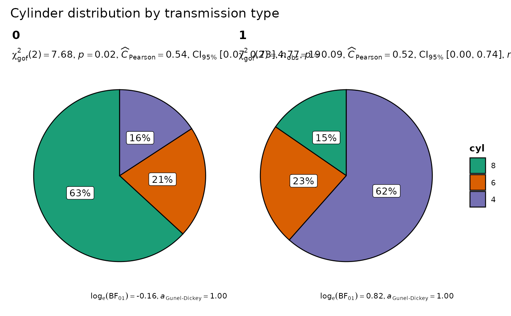

Helper function for ggstatsplot::ggpiestats to apply this
function across multiple levels of a given factor and combining the
resulting plots using ggstatsplot::combine_plots.
Arguments
- data
A data frame (or a tibble) from which variables specified are to be taken. Other data types (e.g., matrix,table, array, etc.) will not be accepted. Additionally, grouped data frames from
{dplyr}should be ungrouped before they are entered asdata.- ...
Arguments passed on to
ggpiestatsxThe variable to use as the rows in the contingency table. Please note that if there are empty factor levels in your variable, they will be dropped.
yThe variable to use as the columns in the contingency table. Please note that if there are empty factor levels in your variable, they will be dropped. Default is
NULL. IfNULL, one-sample proportion test (a goodness of fit test) will be run for thexvariable. Otherwise an appropriate association test will be run. This argument can not beNULLforggbarstats().proportion.testDecides whether proportion test for
xvariable is to be carried out for each level ofy. Defaults toresults.subtitle. Inggbarstats(), only p-values from this test will be displayed.digits.percNumeric that decides number of decimal places for percentage labels (Default:
0L).labelCharacter decides what information needs to be displayed on the label in each pie slice. Possible options are
"percentage"(default),"counts","both".label.argsAdditional aesthetic arguments that will be passed to
ggplot2::geom_label().label.repelWhether labels should be repelled using
{ggrepel}package. This can be helpful in case of overlapping labels.legend.titleTitle text for the legend.
bf.messageLogical that decides whether to display Bayes Factor in favor of the null hypothesis. This argument is relevant only for parametric test (Default:
TRUE).results.subtitleDecides whether the results of statistical tests are to be displayed as a subtitle (Default:
TRUE). If set toFALSE, only the plot will be returned.subtitleThe text for the plot subtitle. Will work only if
results.subtitle = FALSE.captionThe text for the plot caption. This argument is relevant only if
bf.message = FALSE.ggplot.componentA
ggplotcomponent to be added to the plot prepared by{ggstatsplot}. This argument is primarily helpful forgrouped_variants of all primary functions. Default isNULL. The argument should be entered as a{ggplot2}function or a list of{ggplot2}functions.package,paletteName of the package from which the given palette is to be extracted. The available palettes and packages can be checked by running
View(paletteer::palettes_d_names).ggthemeA
{ggplot2}theme. Default value istheme_ggstatsplot(). Any of the{ggplot2}themes (e.g.,ggplot2::theme_bw()), or themes from extension packages are allowed (e.g.,ggthemes::theme_fivethirtyeight(),hrbrthemes::theme_ipsum_ps(), etc.). But note that sometimes these themes will remove some of the details that{ggstatsplot}plots typically contains. For example, if relevant,ggbetweenstats()shows details about multiple comparison test as a label on the secondary Y-axis. Some themes (e.g.ggthemes::theme_fivethirtyeight()) will remove the secondary Y-axis and thus the details as well.typeA character specifying the type of statistical approach:
"parametric""nonparametric""robust""bayes"
You can specify just the initial letter.
digitsNumber of digits for rounding or significant figures. May also be
"signif"to return significant figures or"scientific"to return scientific notation. Control the number of digits by adding the value as suffix, e.g.digits = "scientific4"to have scientific notation with 4 decimal places, ordigits = "signif5"for 5 significant figures (see alsosignif()).conf.levelScalar between
0and1(default:95%confidence/credible intervals,0.95). IfNULL, no confidence intervals will be computed.pairedLogical indicating whether data came from a within-subjects or repeated measures design study (Default:
FALSE).countsThe variable in data containing counts, or
NULLif each row represents a single observation.ratioA vector of proportions: the expected proportions for the proportion test (should sum to
1). Default isNULL, which means the null is equal theoretical proportions across the levels of the nominal variable. E.g.,ratio = c(0.5, 0.5)for two levels,ratio = c(0.25, 0.25, 0.25, 0.25)for four levels, etc.sampling.planCharacter describing the sampling plan. Possible options:
"indepMulti"(independent multinomial; default)"poisson""jointMulti"(joint multinomial)"hypergeom"(hypergeometric). For more, seeBayesFactor::contingencyTableBF().
fixed.marginFor the independent multinomial sampling plan, which margin is fixed (
"rows"or"cols"). Defaults to"rows".prior.concentrationSpecifies the prior concentration parameter, set to
1by default. It indexes the expected deviation from the null hypothesis under the alternative, and corresponds to Gunel and Dickey's (1974)"a"parameter.
- grouping.var
A single grouping variable.
- plotgrid.args
A
listof additional arguments passed topatchwork::wrap_plots(), except forguidesargument which is already separately specified here.- annotation.args
A
listof additional arguments passed topatchwork::plot_annotation().
Details
For details, see: https://indrajeetpatil.github.io/ggstatsplot/articles/web_only/ggpiestats.html
Examples
set.seed(123)
# grouped one-sample proportion test
grouped_ggpiestats(mtcars, x = cyl, grouping.var = am)
